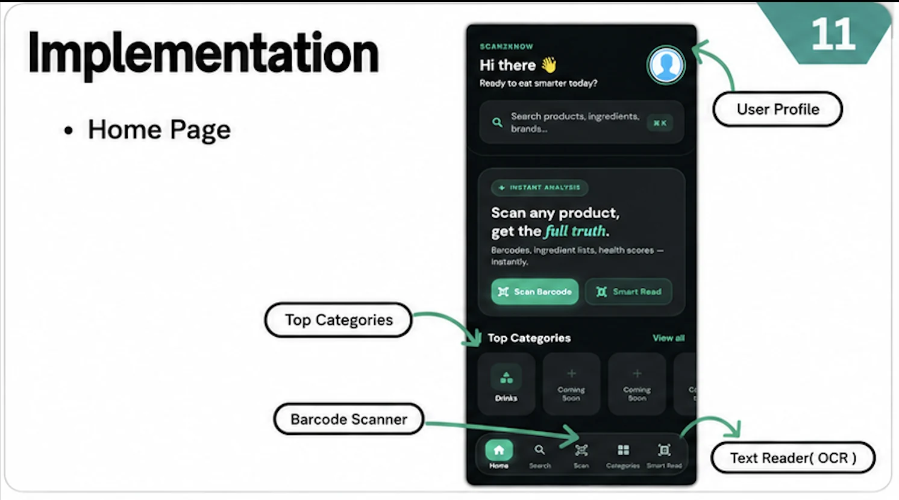
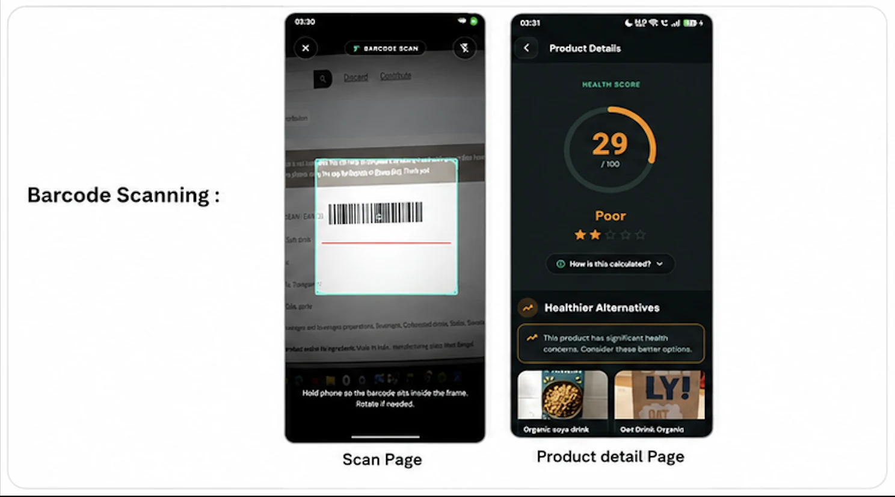
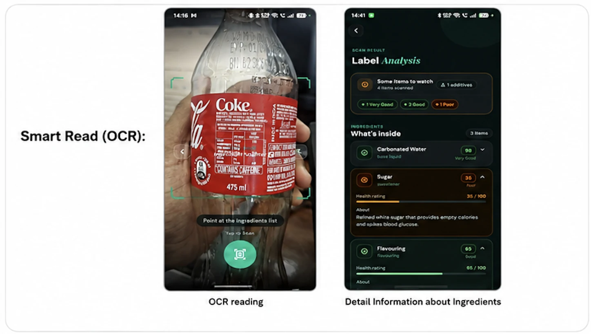

From product scan to food intelligence.
ScanToKnow allows users to scan packaged products through a barcode or extract ingredients from labels using OCR. The backend resolves product and ingredient information against structured data and returns classifications, health-oriented insights and alternative product recommendations.
From package input to product insights.
Understanding Food Labels
Ingredient labels can be difficult to interpret quickly, especially when consumers need to identify additives, preservatives and broader product-quality signals. ScanToKnow aims to turn this information into a more accessible product-analysis experience.
Scan-to-Insight Workflow
The application converts a scanned package into structured ingredient information, classifications and understandable health insights. Instead of only flagging potentially concerning ingredients, the workflow also provides healthier product alternatives.
From Product to Recommendation
The repository contains the Flutter client and Node.js / Express backend. No verified public live-demo endpoint is currently included.
Inside the App.


